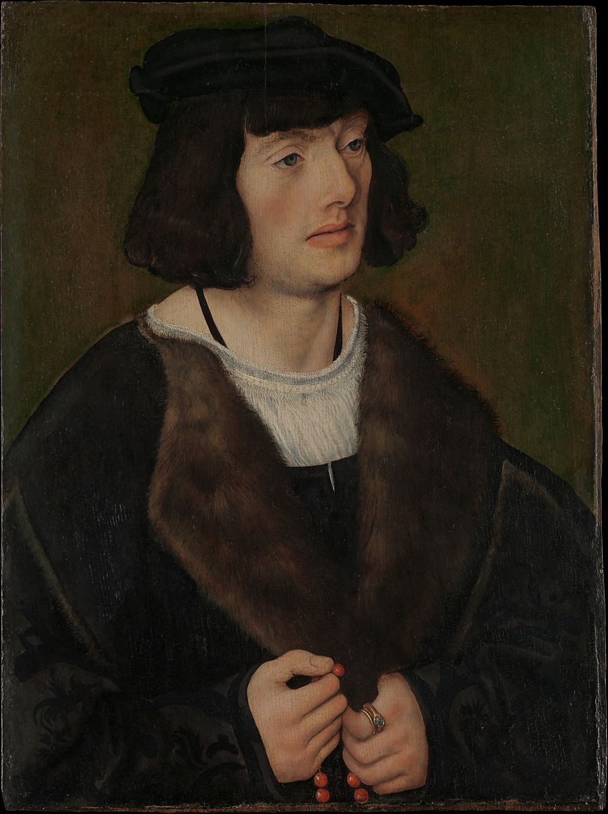

<head>
<meta charset="UTF-8" />
<meta name="keywords" content="drawing, painting" />
<meta name="description" content="drawings by Sunjy" />
<title>Sunjy</title>
<link rel="shortcut icon" type="image/x-icon" href="../../mImages/mCommon/favicon.ico" media="screen" />
<link rel="stylesheet" type="text/css" href="../../mCsses/mCommon/mCssA.css" />
<link rel="stylesheet" type="text/css" href="../../mCsses/mCommon/mCssB.css" />
<link rel="stylesheet" type="text/css" href="../../mCsses/mCommon/mCssC.css" />
<link rel="stylesheet" type="text/css" href="../../mCsses/mCommon/mCssD.css" />
<link rel="stylesheet" type="text/css" href="../../mCsses/mContent/mCssA.css" />
<link rel="stylesheet" type="text/css" href="../../mCsses/mContent/mCssB.css" />
<link rel="stylesheet" type="text/css" href="../../mCsses/mContent/mCssC.css" />
<link rel="stylesheet" type="text/css" href="../../mCsses/mContent/mCssD.css" />
</head>
<script type="text/javascript" src="../../mScripts/mContent/mContentAA.js" /></script>
<script type="text/javascript" src="../../mScripts/mContent/mContentAB.js" /></script>
<script type="text/javascript" src="../../mScripts/mContent/mContentAC.js" /></script>
<script type="text/javascript" src="../../mScripts/mContent/mContentAD.js" /></script>
<script type="text/javascript"></script> 
<script type="text/javascript">
document.write('<div class="mImgAbsolute"></div>');
/*
document.write('<p class="mFontSizeBColor" />From a white paper...</p>');
document.write('<table class="center"><tr><td>');
document.write('');
document.write('</td></tr></table>');
*/
</script>


<script type="text/javascript">
document.write('<p class="mFontSizeBColor" />Portrait of a Man with a Rosary</p>');
document.write('<p class="mFontSizeSColor" />By Lucas Cranach the Elder, ca. 1508. This painting and <i>Portrait of a Woman in Prayer</i> (Kunsthaus, Zürich) originally formed the wings of a devotional triptych. The young, well-dressed sitter appears seemingly transfixed by the now-lost central image—perhaps of the Virgin and Child—to which he offers a silent prayer as he pauses on a bead of the rosary held in his left hand. The man’s ring, bearing the coat of arms of the Dutch families of Six van Hillegom and Six van Oterleek, suggests that he came from the Netherlands. Cranach probably painted this portrait during his visit there in 1508.</p>');
document.write('<table class="center" /><tr><td>');
document.write('Portrait of a Woman in Prayer</i> (Kunsthaus, Zürich) originally formed the wings of a devotional triptych. The young, well-dressed sitter appears seemingly transfixed by the now-lost central image—perhaps of the Virgin and Child—to which he offers a silent prayer as he pauses on a bead of the rosary held in his left hand. The man’s ring, bearing the coat of arms of the Dutch families of Six van Hillegom and Six van Oterleek, suggests that he came from the Netherlands. Cranach probably painted this portrait during his visit there in 1508." />');
document.write('</td></tr></table>');
</script>


